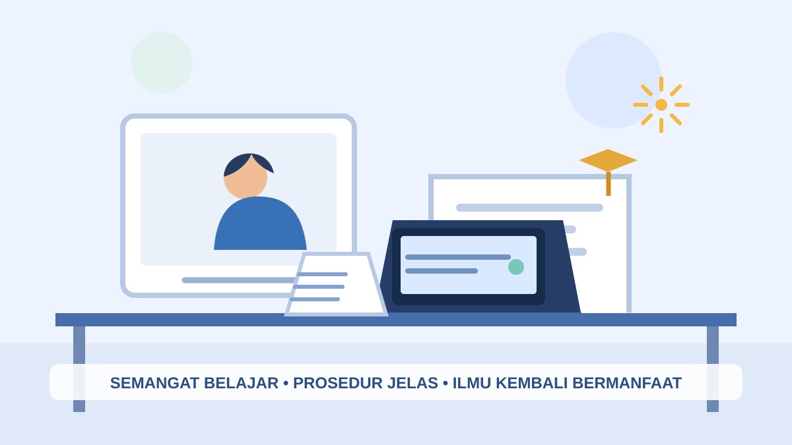

Kuliah S3 bagi ASN: Semangat Belajarnya, Bereskan Juga Izin Kedinasan
Perbincangan tentang studi doktoral ASN mengingatkan kita pada dua hal: semangat belajar patut diapresiasi, urusan izin kedinasan perlu dibereskan sejak awal.

Tulisan ini tidak menyebut nama, instansi, atau rincian pribadi, dan tidak menilai kasus tertentu. Fokusnya aturan umum pengembangan kompetensi PNS melalui pendidikan.
Versi Mudahnya
Melanjutkan kuliah sampai S3 itu hal baik. Pastikan status studi dan persetujuan instansi sebelum mendaftar, berangkat, atau mulai kuliah. Biaya pribadi tidak otomatis berarti bebas dari prosedur kedinasan. Tanyakan mekanisme yang berlaku secara tertulis kepada unit kepegawaian atau pejabat berwenang.
Ilmu doktoral dapat memperkuat kapasitas ASN.
Pastikan skema dan keputusan kedinasan sebelum studi.
Judul berita saja belum cukup menyimpulkan pelanggaran atau sanksi.
Semangat belajarnya patut diapresiasi
Menempuh pendidikan doktoral sambil membangun karier bukan perkara ringan. Ada waktu, tenaga, dan komitmen besar di baliknya. Ilmu yang didapat pun dapat bermanfaat untuk pelayanan publik dan pengembangan organisasi.
Saat membahas kasus yang ramai diperbincangkan, kita bisa mengakui dua hal sekaligus: semangat belajarnya layak dihargai, dan prosedur kedinasan tetap penting. Membahas aturan tidak perlu berubah menjadi bahan untuk mempermalukan orang.
Artikel ini tidak mengulang identitas atau rincian kasus yang beredar. Kita fokus pada pelajaran umum untuk siapa pun yang merencanakan S2 atau S3.
Apa aturan tugas belajar?
Surat Edaran Menteri PANRB Nomor 28 Tahun 2021 tentang Pengembangan Kompetensi PNS melalui Jalur Pendidikan tercatat berlaku di JDIH Kementerian PANRB. Tugas belajar diberikan sesuai rencana kebutuhan instansi. Aturan ini juga memuat persetujuan PPK, perjanjian tugas belajar, jangka waktu, serta hak dan kewajiban pegawai.[1]
SE tersebut mengatur tugas belajar biaya mandiri dalam kondisi tertentu, dengan ketentuan tugas belajar yang berlaku. Jadi jangan menganggap kuliah dengan biaya pribadi tidak memerlukan persetujuan kedinasan. Tanyakan skema dan prosedur terbaru di instansi sebelum mulai studi.[2]
Tugas belajar, belajar sambil tetap menjalankan pekerjaan, dan pencantuman gelar bukan proses yang otomatis sama. Mekanismenya dapat bergantung pada skema pendidikan, lama studi, pembiayaan, dan aturan instansi. Lebih aman memastikan semuanya sebelum membayar pendaftaran atau tiket.
Bagaimana membaca kabar tentang sanksi?
Kalau ada berita tentang sanksi berat, kita belum bisa menilai perkara seseorang hanya dari judul atau potongan unggahan. Konteks keputusan, aturan internal, tugas pegawai, persetujuan yang pernah diminta, serta proses pemeriksaan dapat berpengaruh.
PP Nomor 94 Tahun 2021 mengatur kewajiban, larangan, jenis hukuman disiplin, kewenangan pejabat yang menghukum, dan hak PNS menempuh upaya administratif. Hindari kesimpulan sederhana seperti “kuliah tanpa izin pasti dipecat”; perkara tertentu perlu dilihat berdasarkan aturan, bukti, kewenangan, dan prosedurnya.[3]
PP Nomor 79 Tahun 2021 mengatur upaya administratif berupa keberatan dan banding administratif. Jenis upaya dan batas waktunya perlu dicocokkan dengan keputusan yang diterima.[4]
Checklist sebelum kuliah
- Sampaikan rencana studi secara tertulis kepada atasan dan unit kepegawaian.
- Minta penjelasan tertulis tentang skema dan persetujuan yang diperlukan.
- Pastikan program dan perguruan tinggi memenuhi persyaratan, termasuk dokumen studi luar negeri.
- Pahami kesepakatan jam kerja, target, pelaporan, biaya, masa studi, dan kemungkinan ikatan dinas.
- Simpan surat persetujuan, perjanjian, korespondensi, dan jawaban resmi.
Kalau kuliah sudah berjalan tetapi statusnya belum jelas, segera hubungi unit kepegawaian, jelaskan situasinya, dan tanyakan langkah administrasi yang bisa ditempuh.
Ilmu tetap bisa bermanfaat
Semoga setiap ASN yang berjuang menempuh pendidikan tinggi diberi kelancaran. Bila muncul persoalan administrasi, semoga prosesnya diperiksa secara adil dan memberi ruang bagi semua pihak untuk menyampaikan konteks.
Instansi juga punya peran: prosedur belajar perlu mudah ditemukan, konsultasi dijawab sebelum pegawai berangkat, dan pengembangan kompetensi diarahkan pada kebutuhan organisasi. Dengan komunikasi sejak awal, ilmu yang dibawa pulang akan lebih mudah dimanfaatkan untuk kepentingan publik.
Tetap semangat belajar. Urus persetujuannya, jaga komunikasi, dan pastikan semua pihak memahami kesepakatannya.
Pertanyaan umum
Kalau biaya kuliah sendiri, apakah tetap perlu persetujuan?
Jangan berasumsi bahwa biaya mandiri otomatis membebaskan pegawai dari prosedur kedinasan. Tanyakan mekanisme yang berlaku dan minta kepastian tertulis.
Apakah kuliah tanpa izin otomatis membuat PNS dipecat?
Artikel ini tidak menyimpulkan sanksi untuk kasus tertentu. Penanganan disiplin harus dilihat berdasarkan aturan, bukti, kewenangan, proses, dan hak administratif.
Apakah izin kampus atau beasiswa sudah cukup?
Izin akademik dan persetujuan beasiswa tidak otomatis menggantikan persetujuan kedinasan dari instansi tempat ASN bekerja.
Sumber resmi
- JDIH Kementerian PANRB, SE Nomor 28 Tahun 2021 (status tercatat berlaku).
- Naskah SE Menteri PANRB Nomor 28 Tahun 2021 di situs BKN.
- JDIH BPK, PP Nomor 94 Tahun 2021 tentang Disiplin PNS (status berlaku).
- JDIH BPK, PP Nomor 79 Tahun 2021 tentang Upaya Administratif dan BPASN.
- BKN, penjelasan prosedur tugas belajar dan izin belajar PNS (16 Agustus 2021; sebagai penjelasan prosedural, bukan pengganti aturan instansi yang lebih baru).
Sumber diperiksa 21 November 2026. Untuk keputusan administrasi, ikuti naskah resmi dan konfirmasi ke instansi masing-masing.
Apakah artikel ini membantu?
Komentar rekan ASN
Tanggapi isi artikel atau berbagi pengalaman. Tidak perlu akun dan email.
Jangan kirim data kepegawaian atau informasi pribadi. Baca kebijakan privasi.
Memuat komentar…